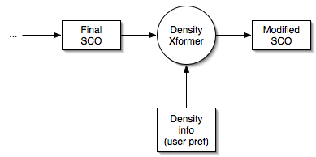
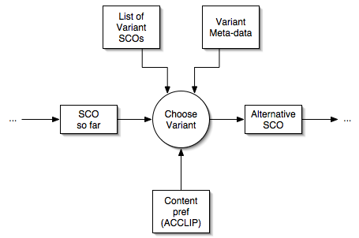

The basic flow of information is captured in Figure 1, below:
given a SCO and the details of how it should be transformed (the "Xform
info" in the figure), the transformation engine engine modifies the SCO
to produce a transformed version of it.
Figure 1. Basic Flow of Information in a DAM Transformation.
This is an intentionally oversimplified view of the transformation
process, and is meant to provide a starting point. In terms of
content density, figure 1 represents the most collapsed view of the
process. What is needed is to expand each of the boxes to state
explicitly what information is inside that box, and to expand the
circles to specify what process(es) it represents. Another issue is the sequence of the transformations.
In what follows each transformation discussed in "DAM Transformation Requirements"
is represented as an information flow diagram. There is some
attempt to divest the transformation of its TILE influence, and
describe the situation in a more general way. The approach is
inspired by Jutta's comment (personal communication) that
transformations should be thought of horizontally, and that they are
not specifically for branding, or for different devices, or for
accessibility, or for anything in particular, but are transformations
that prove useful in multiple contexts. The attempt at generality
is not completely successful, since trying to state what the
transformation is without reference to at least one concrete
implementation is difficult.
All else being equal, it is fairly certain that the last
transformation is the one that deals with font, sizes, colours, and so
on. This is illustrated in Figure 2.
Figure 2. The Last Stage: Text Rendering Transformation.
Note that the actual rendering of the text takes place in the SCO
viewer (the browser). All that the CSS Xform does is to inject
the CSS information into the SCO before it is sent to the
browser. The injection consists of the addition of <link>
or a <style> element(s).
For completion sake, here is a diagram of the Layout transformation
from the point of view that it is an XSL transformation that places
sections of the document into visual locations.
Viewed this way, the layout transformation happens prior to the Text Rendering transformation.
Figure 3. Layout Transformation.
Figure 4 shows two possible interpretations of the document ordering
transformation. Another possibility is that some
combination of meta-data and XSL rules is used to
create the re-ordered SCO.
Figure 4. Two Views of the DOM Order Transformation
The top diagram in figure 4 is meant to
show the idea that the document is reordered according to some XSL
rules and an XSLT on the document. The bottom diagram
shows the idea that meta-data could be used to choose among a set of
"alternative" documents that differ from one another in terms of their
ordering.
If it is the case that all of these
alternative documents can be generated by some set of XSL rules, then
these diagrams are logically equivalent, and the top method is
preferrable. Are there any reasons to suspect that's not the case?
This is actually a where the transformation is not a
transformation on a SCO. Rather it is a navigation device that
chooses which SCOs are visible. In TILE, the choice is based solely the
user's preference; nothing else in the system affects that
choice. This is the reason for the parenthetical "user pref" in
the exclusion information box. For the DAM, it need not be this
way; in fact, the exclusion information will also involve whatever
branding requires for exclusion.
Figure 5. Topic Exclusion
Is this a case where the branding might override the user?
That is, if branding requires that a SCO be invisible, and the user
desires to see it, who wins?
Since this is the user's choice in TILE, this transformation occurs
live at the browser. The user can mark things in a table of
contents view as excluded, and as this is done, the back end servlet
makes a note as to which topics should not be automatically delivered
by "next/previous" requests. As such, the transformation always
takes place at the end of the process. Note that this is partly because no SCO is
transformed at all at this point. Will this technique work in
the case of the DAM?

Figure 6. Density Transformation
Again, like topic exclusion, the
transformation takes place on the client and is live. It is a
toggle that the user can switch to collapse and expand content..
Figure 7 shows the content views transformation, and is based on the details given in the transformations requirements document.
Figure 7. Image to Text Intensive Transformation.
This is the least general specification so
far. The SCO is an (x)html document with image tags
properly marked up with alt and longdesc
attributes. The user preference for text intensive views of
images drives the transformer to acquire the alt and longdesc text, and
insert them as a paragraph in the (x)html.
Figure 8 shows an abstraction of the flow of information for all of the alternatives to X transformations. These include textual, graphic and, audio alternatives.

Figure 8. Alternative Content Transformation
The transformation's two triggering inputs
are a list of alternative SCOs and meta-data on each of them defining
the way that they are a variant of the input SCO. The
transformer's job is to choose the variant SCO that matches the
meta-data requirements, and the preference(s) that states which
alternative is needed.
Not sure how to diagram this one...pending.
Figure 10. Show/Hide Table of Contents
Like the topic exclusion and content
density transformations, the visibility of the table of contents is
handled as a toggle. Its initial value depends on the user's
ACCLIP preference, but thereafter the user can quickly switch the sense
of the toggle. [**Is this handled by a servlet, or JavaScript on
the client?]
Technically, the table of contents is
actually a view on the item tree in the content package manifest.
It is not a list of SCOs as in the figure. However, this is a short cut
for the figure.
Figure 11 diagrams the depth-first vs. breadth-first navigation
transform. Note, again, that this is not a transformation on an
individual SCO, but occurs at a higher navigational level.

Figure 11. Table of Contents Traversal
Somewhere, there is a table of contents
data structure that represents the topics/activities/objectives of the
presentation as a whole. That table of contents is organized in a
hierarchical fashion. In TILE, this is the item organization in
the content package manifest.
The transformation consists of defining
how the table of contents heirarchy is to be traversed. The
diagram illustrates a breadth-first traversal of the hierarchy -- first
the top level items are shown in sequence, followed by the items in the
next level of the hierarchy. In comparison, a depth-first
traversal of the same hierarchy would proceed:
Item1 -> Item1a -> Item1b -> Item2 ...